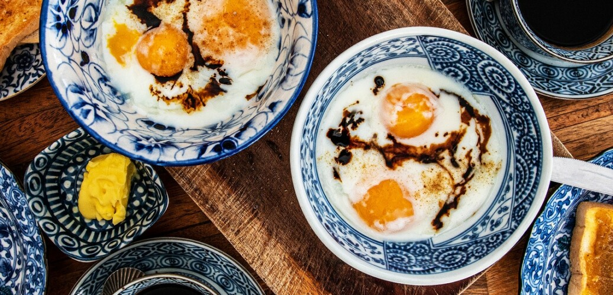

Half Boiled Egg

Description
This half-boiled eggs recipe makes the classic kopitiam eggs tailor-made for having with kaya toast in a Singaporean or Malaysian coffee shop. The just-set, still runny yolks and milky whites are perfect for dipping toast ‘soldiers’ into. The secret is getting perfectly soft eggs every time. My technique is flawless for achieving the perfect soft boiled eggs every time.
Ingredients
- 2 eggs - around 57 g (2 oz) per egg
- 1 tsp white pepper
- 1 tsp dark soy
Steps
- Bring water in a kettle or on the stove to a rolling boil.
- Place each egg gently into an individual stainless steel vacuum insulated coffee mug.
- Take the water off the boil for 15 seconds and then pour the water gently into each coffee mug covering the eggs fully. Put on the lid and set a timer for 8 minutes.
- Fill a mixing bowl with cold water and a couple of ice cubes. We want the water bath to be around 10˚C.
- When the timer is up, remove the eggs from the mugs with a large spoon and gently place them in the water bath.
- When the eggs are cool enough to touch, remove them from the water bath and dry them off.
- With an egg in your palm over the serving bowl, gently crack the centre of the egg.
- Tip out the egg from the shell into the bowl. If the yolk stays in one half of the shell scoop it out with a spoon. Remove any extra egg white from the shells and add to the serving bowl.
- Serve with white pepper, dark soy and toast fingers.